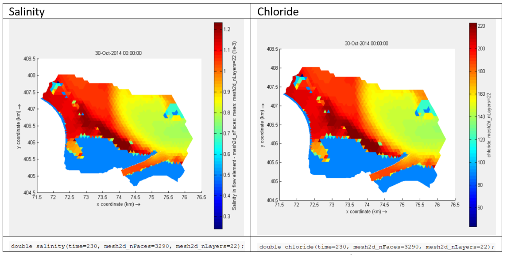

Multiply rule
Multiply rule
- multiply_rule:
name: <name_of_rule_in_text>
description: <description_of_rule_in_text>
multipliers: [<value_to_multiply_with>]
input_variable: <one_input_variable_name>
output_variable: <one_output_variable_name>
- multiply_rule:
name: <name_of_rule_in_text>
description: <description_of_rule_in_text>
multipliers_table:
- ["start_date", "end_date", "multipliers"]
- [<DD-MM>, <DD-MM>, [<value_to_multiply_with>]]
- [<DD-MM>, <DD-MM>, [<value_to_multiply_with>]]
input_variable: <one_input_variable_name>
output_variable: <one_output_variable_name>
The multiply rule allows for multiplication of variables. This could be used for unit transformation (e.g., salinity to chloride) or scenario creation (e.g., water level 80% of existing value). The rule operates on all cells both 3D (in horizontal as vertical) as in the time axes. The same dimensions are returned at the output variable. The rule needs to be applied to an existing variable. A new variable is created when the rule is executed.
When using the multiply rule with a start and end date (or multiple start and end dates) all periods that are not covered will be set to NaN. In this way the multiply rule can also be used as a filter in time. NaNs are ignored by any further calculations (for example the time_aggregation_rule).
#EXAMPLE: Salinity (psu) to chloride (mg/l) in a freshwater environment.
- multiply_rule:
name: Salinity to chloride
description: Converts salinity (psu) to chloride (CL- mg/l) for fresh water environments
multipliers: [0.0018066, 1e5]
input_variable: salinity
output_variable: chloride
- multiply_rule:
name: Select only the summer half year for chloride
description: Select only the summer half year for chloride as this is important for plant growth
multipliers_table:
- ["start_date", "end_date", "multipliers"]
- ["15-04" , "15-09" , [1.0]]
input_variable: chloride
output_variable: chloride_grow_period
